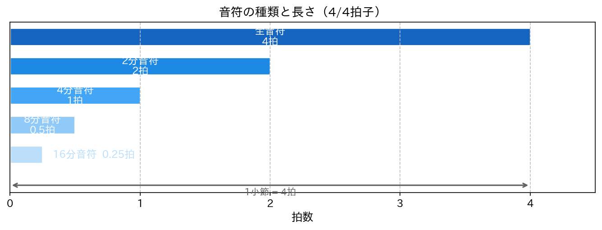
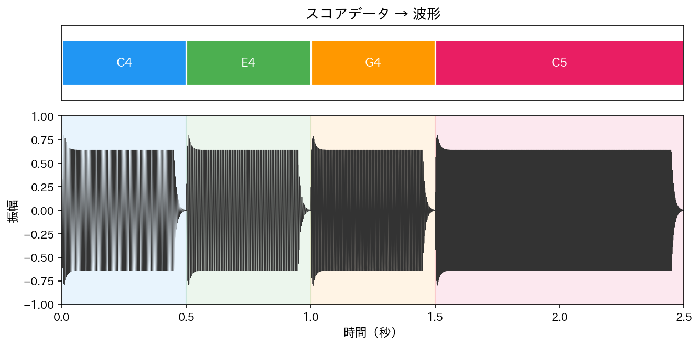
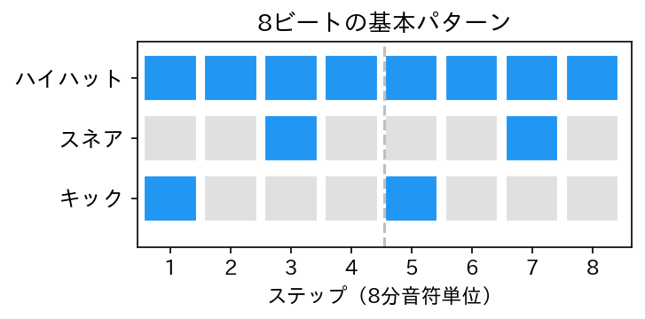

Lesson 11: リズムとスコアファイル¶

このレッスンで学ぶこと¶
- テンポ（BPM）とビートの関係を数理的に理解する
- 音符の長さを秒数に変換する方法を学ぶ
- リストやデータ構造を使って音楽を表現する方法を知る
- audio_lib のシーケンサーで複数のトラックを組み合わせて楽曲を作る
- ドラムパターンをプログラムで生成する
Lesson 10 までに、音の生成・音色・エンベロープ・エフェクトと、音作りのための道具を一通り学びました。このレッスンでは Python に戻り、リズムとスコア（楽譜データ）を扱います。「いつ」「どの音を」「どれくらいの長さで」鳴らすかをプログラムで表現し、リストから音楽を組み立てる方法を学びましょう。
11.1 テンポとビート¶
BPM とは¶
音楽のテンポはBPM（Beats Per Minute）で表します。BPM 120 なら「1分間に120拍」、つまり1拍あたり 0.5 秒です。
音符の長さ¶
4分の4拍子を基準にすると、各音符の長さは次のようになります。
| 音符 | 拍数 | BPM 120 での秒数 |
|---|---|---|
| 全音符 | 4拍 | 2.0 秒 |
| 2分音符 | 2拍 | 1.0 秒 |
| 4分音符 | 1拍 | 0.5 秒 |
| 8分音符 | 0.5拍 | 0.25 秒 |
| 16分音符 | 0.25拍 | 0.125 秒 |

拍数から秒数への変換は単純な掛け算です。
def beats_to_seconds(beats, bpm):
"""拍数を秒数に変換する"""
return beats * 60.0 / bpm
bpm = 120
print(f"4分音符: {beats_to_seconds(1, bpm)} 秒")
print(f"8分音符: {beats_to_seconds(0.5, bpm)} 秒")
print(f"付点4分音符: {beats_to_seconds(1.5, bpm)} 秒")
付点音符は元の音符の1.5倍の長さです。付点4分音符なら 1 × 1.5 = 1.5拍になります。
11.2 リストでメロディを表現する¶
音楽を作る第一歩として、メロディをリストで表現してみましょう。ここではまだ audio_lib を使わず、考え方を理解します。
音名のリスト¶
「きらきら星」の冒頭を考えます。
しかしこれだけでは「いつ鳴らすか」「どれくらいの長さか」がわかりません。音符の長さ（拍数）の情報を加えましょう。
# (音名, 拍数) のペアで表現
melody = [
("C4", 1), ("C4", 1), ("G4", 1), ("G4", 1),
("A4", 1), ("A4", 1), ("G4", 2),
]
これで「C4 を1拍鳴らす → C4 を1拍鳴らす → G4 を1拍 → ...」という情報が表現できました。最後の G4 だけ2拍（2分音符）です。
休符の表現¶
休符は None で表します。
# 休符を含むメロディ
melody = [
("C4", 1), ("C4", 1), ("G4", 1), ("G4", 1),
("A4", 1), ("A4", 1), ("G4", 2),
(None, 1), # 1拍の休符
("F4", 1), ("F4", 1), ("E4", 1), ("E4", 1),
("D4", 1), ("D4", 1), ("C4", 2),
]
このように、リストとタプルを使えば音楽の「スコア（楽譜データ）」を Python のデータとして表現できます。
11.3 リストから音を組み立てる¶
メロディのリストを実際の音声データに変換してみましょう。まず audio_lib を使って簡単に実現する方法を見て、次にその中身を確認します。
audio_lib のシーケンサーで鳴らす¶
audio_lib には Sequencer、Track、Note というクラスが用意されています。
from audio_lib.sequencer import Sequencer, Track, create_simple_melody
from audio_lib.instruments import Piano
from audio_lib.notebook import play_sound
# シーケンサーとトラックを準備
seq = Sequencer()
seq.tempo = 120
track = Track(name="melody", instrument=Piano())
seq.add_track(track)
# きらきら星の冒頭（MIDI ノート番号のリスト）
notes = [60, 60, 67, 67, 69, 69, 67, None, 65, 65, 64, 64, 62, 62, 60]
# メロディを追加（各音を4分音符 = 1拍で配置）
beat_sec = seq.beats_to_seconds(1) # 1拍の秒数
create_simple_melody(track, notes, note_duration=beat_sec)
# レンダリングして再生
audio = seq.render()
play_sound(audio)
create_simple_melody() は、音のリストを等間隔で並べてくれるヘルパー関数です。None は休符として扱われます。
音符ごとに長さを変える¶
きらきら星では最後の G4 が2拍（2分音符）です。音符ごとに長さを指定するには、Track の add_note() メソッドを使います。
from audio_lib.sequencer import Sequencer, Track
from audio_lib.instruments import Piano
from audio_lib.notebook import play_sound
seq = Sequencer()
seq.tempo = 120
track = Track(name="melody", instrument=Piano())
seq.add_track(track)
# (音名, 拍数) のスコアデータ
score = [
("C4", 1), ("C4", 1), ("G4", 1), ("G4", 1),
("A4", 1), ("A4", 1), ("G4", 2),
(None, 1),
("F4", 1), ("F4", 1), ("E4", 1), ("E4", 1),
("D4", 1), ("D4", 1), ("C4", 2),
]
# スコアをトラックに変換
current_time = 0.0
for note_name, beats in score:
duration_sec = seq.beats_to_seconds(beats)
if note_name is not None:
track.add_note(note_name, velocity=100,
start_time=current_time, duration=duration_sec)
current_time += duration_sec
audio = seq.render()
play_sound(audio)
ポイントは current_time です。各音符の開始時刻を積算していくことで、音が順番に鳴るように配置しています。休符のときは add_note() を呼ばず、current_time だけ進めます。
11.4 中身を見てみよう — 素の Python でスコアを処理する¶
audio_lib のシーケンサーが裏側でやっていることを、素の Python で書いてみましょう。
import numpy as np
from audio_lib.synthesis.oscillators import sine_wave
from audio_lib.synthesis.envelopes import adsr
from audio_lib.synthesis.note_utils import note_name_to_number, note_to_frequency
from audio_lib import AudioSignal
from audio_lib.notebook import play_sound
# スコアデータ
score = [
("C4", 1), ("C4", 1), ("G4", 1), ("G4", 1),
("A4", 1), ("A4", 1), ("G4", 2),
]
bpm = 120
sr = 44100
# 全体の長さを計算
total_beats = sum(beats for _, beats in score)
total_seconds = total_beats * 60.0 / bpm
total_samples = int(sr * total_seconds)
# 出力用の配列を用意
output = np.zeros(total_samples)
# スコアを1音ずつ処理
current_time = 0.0
for note_name, beats in score:
duration = beats * 60.0 / bpm
if note_name is not None:
# 周波数を求める
note_num = note_name_to_number(note_name)
freq = note_to_frequency(note_num)
# サイン波を生成
t = np.linspace(0, duration, int(sr * duration), endpoint=False)
wave = np.sin(2 * np.pi * freq * t)
# エンベロープを適用
env = adsr(duration, attack=0.01, decay=0.1,
sustain=0.7, release=0.05, sample_rate=sr)
wave = wave * env.data
# 出力配列に書き込む
start = int(current_time * sr)
end = start + len(wave)
output[start:end] += wave
current_time += duration
# 正規化して再生
max_val = np.max(np.abs(output))
if max_val > 0:
output = output * 0.8 / max_val
audio = AudioSignal(output, sr)
play_sound(audio)

処理の流れを整理します。
- 全体の長さを計算 — スコアの拍数を合計し、秒数に変換して出力配列を確保する
- 1音ずつ処理 — 音名から周波数を求め、波形を生成し、エンベロープを適用する
- 出力配列に書き込む —
start_timeの位置に波形データを加算する - 正規化 — クリッピングを防ぐために最大値で割る
シーケンサーの本質は「いつ・どの音を・どれくらいの長さで鳴らすか」を時間軸に沿って配置する処理です。audio_lib の Sequencer はこの処理をクラスとして整理したものです。
11.5 ベロシティ — 音の強さを表現する¶
ここまでのスコアは音名と長さだけでしたが、ベロシティ（velocity）を加えると音の強弱も表現できます。ベロシティは MIDI の仕様で 0〜127 の整数値です。
# (音名, 拍数, ベロシティ) のスコア
score = [
("C4", 1, 100), ("C4", 1, 80), ("G4", 1, 100), ("G4", 1, 80),
("A4", 1, 110), ("A4", 1, 90), ("G4", 2, 120),
]
ベロシティは音量に変換します。
audio_lib の Note クラスにもベロシティの属性があります。
from audio_lib.sequencer import Note
note = Note(note_number="C4", velocity=100, start_time=0.0, duration=0.5)
print(note)
Note は音名（文字列）を渡すと内部で MIDI ノート番号に変換してくれます。Lesson 6 で学んだ note_name_to_number() が裏側で使われています。
11.6 ドラムパターンを作る¶
リズムの面白さを実感するために、ドラムパターンをプログラムで作ってみましょう。
ドラムの MIDI ノート番号¶
ドラム音源では、音程ではなく楽器の種類を MIDI ノート番号で区別します。audio_lib の BasicDrum は次の番号に対応しています。
| ノート番号 | 楽器 |
|---|---|
| 36 | キックドラム（バスドラム） |
| 38 | スネアドラム |
| 42 | ハイハット |
リストでドラムパターンを記述する¶
8ビートの基本パターンを作ります。1小節（4拍）を8分音符単位（8ステップ）で表します。
# 8ビートの基本パターン（1 = 鳴らす、0 = 鳴らさない）
kick_pattern = [1, 0, 0, 0, 1, 0, 0, 0] # 1拍目と3拍目
snare_pattern = [0, 0, 1, 0, 0, 0, 1, 0] # 2拍目と4拍目
hihat_pattern = [1, 1, 1, 1, 1, 1, 1, 1] # 全ステップ
このリストを見るだけで、キック・スネア・ハイハットのどこが鳴るかがわかります。0 と 1 のパターンで音楽のリズムを表現できるのは、プログラミングならではの面白さです。

パターンをシーケンサーに変換する¶
from audio_lib.sequencer import Sequencer, Track
from audio_lib.instruments import Drum
from audio_lib.notebook import play_sound
seq = Sequencer()
seq.tempo = 120
drum_track = Track(name="drums", instrument=Drum())
seq.add_track(drum_track)
# パターンデータ
patterns = {
36: [1, 0, 0, 0, 1, 0, 0, 0], # キック
38: [0, 0, 1, 0, 0, 0, 1, 0], # スネア
42: [1, 1, 1, 1, 1, 1, 1, 1], # ハイハット
}
step_duration = seq.beats_to_seconds(0.5) # 8分音符 = 0.5拍
# パターンを2小節分繰り返す
for repeat in range(2):
offset = repeat * 8 * step_duration # 小節のオフセット
for note_num, pattern in patterns.items():
for step, hit in enumerate(pattern):
if hit:
start = offset + step * step_duration
drum_track.add_note(note_num, velocity=100,
start_time=start,
duration=step_duration * 0.8)
audio = seq.render()
play_sound(audio)
enumerate() を使ってステップ番号と値のペアを取り出し、hit が 1 のときだけ音を配置しています。duration を step_duration * 0.8 にしているのは、音の長さをステップ間隔より少し短くして、次の音と重ならないようにするためです。
パターンを変えてみる¶
リストの 0 と 1 を変えるだけで、さまざまなリズムパターンが作れます。
# 16ビート風のハイハット
hihat_pattern = [1, 1, 1, 1, 1, 1, 1, 1, 1, 1, 1, 1, 1, 1, 1, 1]
# シャッフル風（3連符の最初と最後）
hihat_shuffle = [1, 0, 1, 1, 0, 1, 1, 0, 1, 1, 0, 1]
# ファンク風のキック
kick_funk = [1, 0, 0, 1, 1, 0, 0, 0]
パターンの長さや繰り返し回数を変えれば、複雑なリズムも簡単に作れます。
11.7 メロディとドラムを組み合わせる¶
シーケンサーの真価は、複数のトラックを同時に鳴らせることです。メロディトラックとドラムトラックを組み合わせてみましょう。
from audio_lib.sequencer import Sequencer, Track
from audio_lib.instruments import Piano, Drum
from audio_lib.notebook import play_sound
seq = Sequencer()
seq.tempo = 120
# --- メロディトラック ---
melody_track = Track(name="melody", instrument=Piano())
seq.add_track(melody_track)
score = [
("C4", 1), ("C4", 1), ("G4", 1), ("G4", 1),
("A4", 1), ("A4", 1), ("G4", 2),
(None, 1),
("F4", 1), ("F4", 1), ("E4", 1), ("E4", 1),
("D4", 1), ("D4", 1), ("C4", 2),
]
current_time = 0.0
for note_name, beats in score:
dur = seq.beats_to_seconds(beats)
if note_name is not None:
melody_track.add_note(note_name, velocity=100,
start_time=current_time, duration=dur)
current_time += dur
# --- ドラムトラック ---
drum_track = Track(name="drums", instrument=Drum())
drum_track.volume = 0.6 # メロディより少し控えめに
seq.add_track(drum_track)
patterns = {
36: [1, 0, 0, 0, 1, 0, 0, 0],
38: [0, 0, 1, 0, 0, 0, 1, 0],
42: [1, 1, 1, 1, 1, 1, 1, 1],
}
total_steps = 32 # 4小節分（8ステップ × 4）
step_dur = seq.beats_to_seconds(0.5)
for note_num, pattern in patterns.items():
for i in range(total_steps):
step_in_bar = i % len(pattern)
if pattern[step_in_bar]:
drum_track.add_note(note_num, velocity=100,
start_time=i * step_dur,
duration=step_dur * 0.8)
# レンダリングして再生
audio = seq.render()
play_sound(audio)
メロディの下にドラムのリズムが加わることで、一気に「音楽らしさ」が増します。drum_track.volume = 0.6 でドラムの音量を下げ、メロディが埋もれないようにバランスを取っています。
11.8 スコアファイルを設計する¶
ここまではスコアデータを Python のリストとしてコードの中に直接書いていました。しかし、曲が長くなるとコードが読みにくくなります。スコアデータをテキストファイルに分離することを考えてみましょう。
シンプルなスコア形式¶
テキストファイルでスコアを表現する形式を設計します。各行に「音名 拍数」をスペース区切りで書く、シンプルな形式です。
# きらきら星（先頭が # の行はコメント）
# 音名 拍数
C4 1
C4 1
G4 1
G4 1
A4 1
A4 1
G4 2
R 1
F4 1
F4 1
E4 1
E4 1
D4 1
D4 1
C4 2
休符は R（Rest）で表します。
スコアファイルを読み込む関数¶
このテキスト形式を読み込んで、Python のリストに変換する関数を書きましょう。
def load_score(filename):
"""テキスト形式のスコアファイルを読み込む"""
score = []
with open(filename, "r") as f:
for line in f:
line = line.strip()
# 空行とコメント行を飛ばす
if not line or line.startswith("#"):
continue
parts = line.split()
note_name = parts[0]
beats = float(parts[1])
if note_name == "R":
note_name = None
score.append((note_name, beats))
return score
なぜファイルに分離するか¶
スコアをファイルに分けることには、いくつかの利点があります。
- コードとデータの分離 — 曲のデータを変えるのにプログラムを書き換える必要がない
- 読みやすさ — 曲の構造がテキストファイル上で一覧できる
- 再利用 — 同じ再生プログラムで複数の曲を扱える
これは音楽に限らず、プログラミング全般で重要な考え方です。「処理」と「データ」を分けることで、プログラムの柔軟性が高まります。
より豊かな表現¶
スコア形式にベロシティやパートの情報を追加することもできます。
# パート: melody
# 音名 拍数 ベロシティ
melody C4 1 100
melody C4 1 80
melody G4 1 100
melody G4 1 80
# パート: bass
bass C3 4 90
bass F3 4 90
どこまで複雑にするかは目的次第です。学習用途なら、シンプルな「音名 拍数」の形式で十分です。
11.9 Lesson 12 への橋渡し¶
このレッスンで学んだリズムとスコアの考え方は、Lesson 12 の Sonic Pi でのリズムパターンに直接つながります。
| Lesson 11（Python） | Lesson 12（Sonic Pi） |
|---|---|
| BPM、拍数から秒数への変換 | use_bpm 120 |
| リストでパターンを表現 | リングでパターンを表現 |
for ループでステップ処理 |
live_loop でリアルタイム再生 |
Sequencer で複数トラック |
複数の live_loop を同時に実行 |
Drum クラスでドラム音生成 |
sample :bd_haus などのサンプル |
Python では「計算して配列に書き込む」アプローチでしたが、Sonic Pi では「ループで次々に鳴らす」リアルタイムなアプローチになります。
まとめ¶
このレッスンで学んだことを整理します。
| 概念 | 内容 |
|---|---|
| BPM | Beats Per Minute。テンポを表す数値 |
| 拍数と秒数の変換 | 秒 = 拍 × 60 / BPM |
| 音符の長さ | 全音符(4拍)、2分音符(2拍)、4分音符(1拍)、8分音符(0.5拍) |
| ベロシティ | 音の強さ（0〜127）。MIDI の仕様 |
| スコアデータ | (音名, 拍数) のリストで音楽を表現 |
| 休符 | None または R で表現 |
| audio_lib の機能 | 役割 |
|---|---|
Sequencer |
テンポ管理と複数トラックのミックス |
Track |
1つのパート（楽器）の音符列 |
Note |
音符1つ分のデータ（音高・ベロシティ・開始時刻・長さ） |
create_simple_melody() |
リストから等間隔のメロディを生成 |
BasicDrum |
ドラム音を生成（キック=36, スネア=38, ハイハット=42） |
beats_to_seconds() |
拍数を秒数に変換 |
次回予告¶
Lesson 12 では Sonic Pi に戻り、live_loop とサンプルを使ったリズムパターンを作ります。このレッスンでリストに書いたドラムパターンを、Sonic Pi ではリアルタイムに鳴らす方法を学びます。